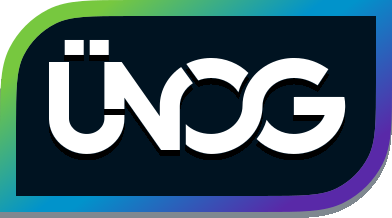

Türkiye'nin en büyük oyun geliştiricileri topluluktan biri olan ÜNOG, bu sefer büyük bir game jam ile karşınızda. Ankara Game Jam, 48 saat boyunca hem çevrimiçi hem de fiziksel olarak gerçekleşen bir oyun geliştirme maratonudur. Eğlenmek, öğrenmek ya da kendinizi sınamak olsun niyet fark etmeksizin herkesi kucaklar.
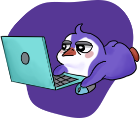
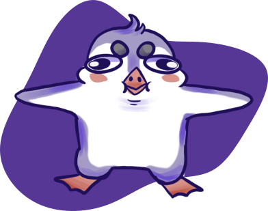
ÜNOG Ankara Game Jam'in fiziksel ayağı Ankara için çok önemli olan Ansera Tech Kampüsünde yapılacaktır. 48 boyunca boyunca hepimize ev olacak olan bu yer gerçekten güzel ve özeldir. Burasını dolu gözüksün diye yazıyorum.
Tam adres: Aziziye Mahallesi Portakal Çiçeği Caddesi Ansera Ticaret Merkezi Kat 3 No:17/139
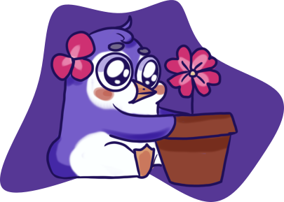


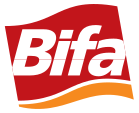
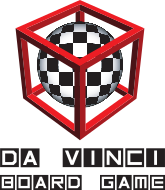
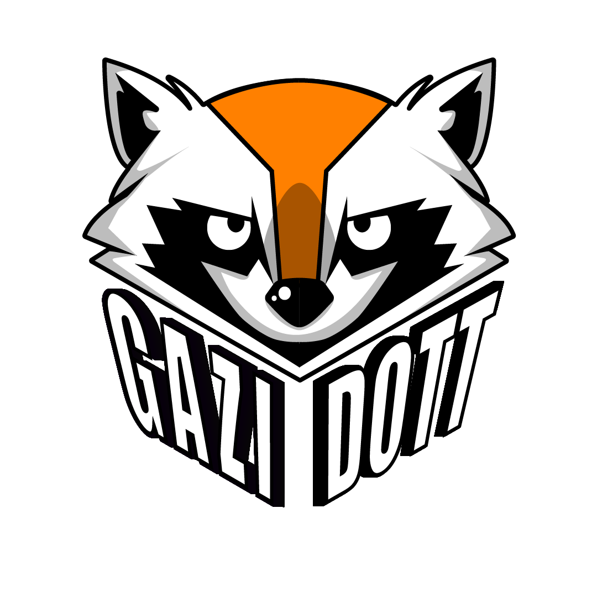
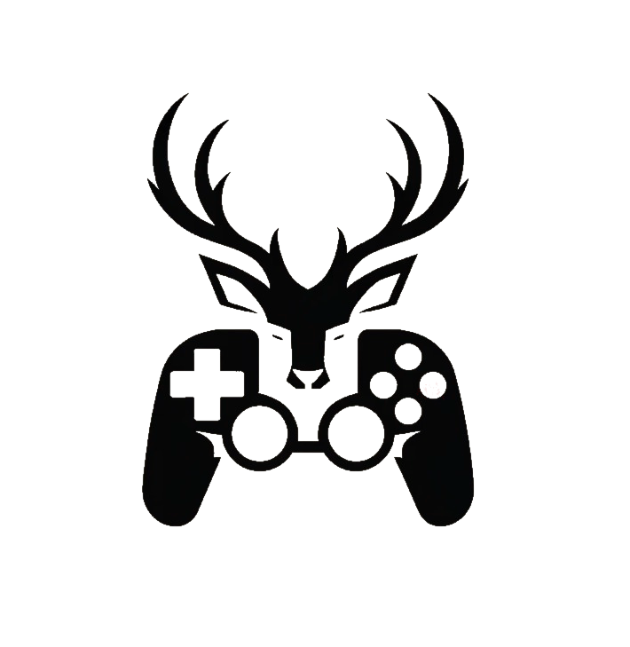
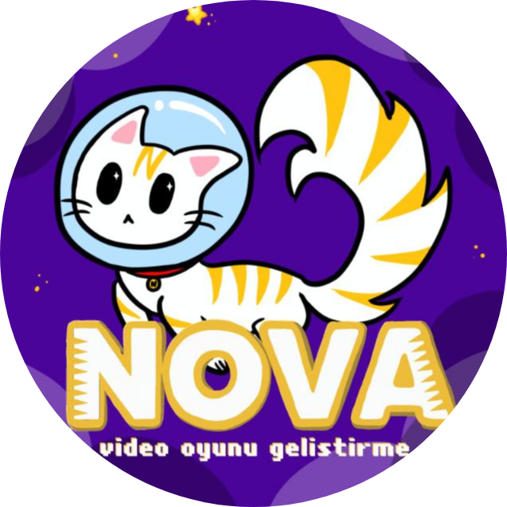
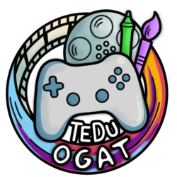
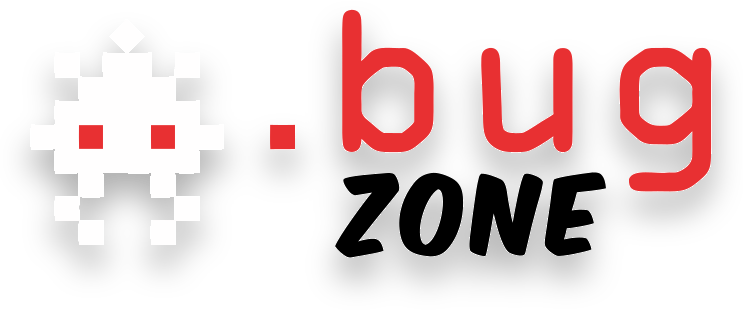
Sponsor olmak mı istiyorsunuz?
team@unog.devÜNOG Ankara Game Jam; oyun geliştirmeye ilgi duyan katılımcıların 48 saat içerisinde ekipleriyle birlikte oyun geliştirdiği, öğrenme, sosyalleşme ve deneyim odaklı bir etkinliktir.
Etkinliğimiz, Ansera AVM içerisinde bulunan Ansera TechBridge alanında gerçekleştirilecektir.
Son başvuru tarihi 9 Temmuz 2026, saat 23.59'dur.
Başvuru sonuçları 10 Temmuz 2026 tarihinde e-posta yoluyla açıklanacaktır. Başvurular Onay, Yedek ve Red olarak sonuçlanacaktır. Onay alan katılımcıların, gönderilecek e-postadaki onay formunu belirtilen süre içerisinde doldurmaları gerekmektedir. Süresi içerisinde formunu doldurmayan katılımcıların yerine yedek listeden alım yapılacaktır.
Evet. Katılımcılar için Wi-Fi erişimi sağlanacaktır.
Etkinliğe bireysel veya en fazla 4 kişilik ekipler halinde katılabilirsiniz. Ekipte bulunan herkesin başvurusunu ayrı ayrı tamamlaması gerekmektedir.
Onay alan katılımcılar için bir WhatsApp topluluğu oluşturulacaktır. İsterseniz bu topluluk üzerinden, isterseniz etkinlik alanındaki Ekip Bulma Panosu aracılığıyla ekip arkadaşı bulabilirsiniz.
Burada yanıtını bulamadığınız tüm sorularınız için ÜNOG Instagram hesabı üzerinden bizimle iletişime geçebilirsiniz.
Hayır. Her seviyeden katılımcıyı bekliyoruz. Öğrenmeye istekli herkes etkinliğimize katılabilir.
Hayır. Etkinliğimizde herhangi bir sıralama veya ödüllendirme sistemi bulunmamaktadır. Game Jam'lerde rekabetten çok; öğrenmenin, yardımlaşmanın, deneyim kazanmanın ve yeni insanlarla tanışmanın daha değerli olduğuna inanıyoruz.
Evet. Yapay zekâ araçlarını kullanabilirsiniz. Kullandığınız araçları ve kullanım şeklinizi oyun teslimi sırasında belirtmeniz gerekmektedir.
Evet. Sınırlı sayıda şişme yatağın bulunduğu bir uyku alanı olacaktır. Ayrıca teras ve ortak kullanım alanlarında dinlenebilirsiniz. Daha konforlu bir deneyim için kendi yastık ve örtünüzü getirmenizi öneriyoruz.
Hayır. Dilerseniz etkinlik alanında kalabilir, dilerseniz evinize gidip tekrar etkinlik alanına dönebilirsiniz.
Evet. Etkinlik boyunca yiyecek ve içecek ikramlarımız olacaktır. Gün içerisinde çay ve kahve servisi yapılacaktır. Ayrıca etkinlik alanının alt katında bulunan Migros marketten ihtiyaçlarınızı karşılayabilirsiniz.
Yanınızda getirmenizi öneriyoruz: 💻 Bilgisayar ve şarj aleti 🔌 Uzatma kablosu (isteğe bağlı) 👕 Rahat kıyafetler veya pijama 🩴 Terlik 🪥 Kişisel hijyen ürünleri 🛏️ Yastık ve ince örtü 👕 Yedek kıyafet (Temmuz ayında hava sıcak olacağı için özellikle öneriyoruz.)
Hayır. Katılımcıların kendi bilgisayarlarını getirmeleri gerekmektedir.